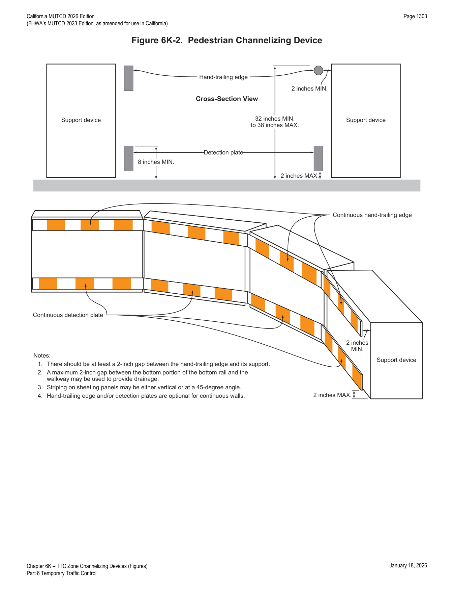
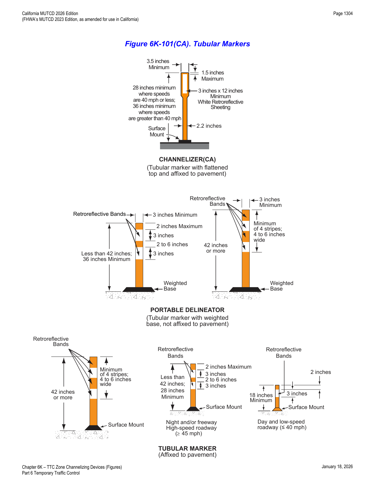
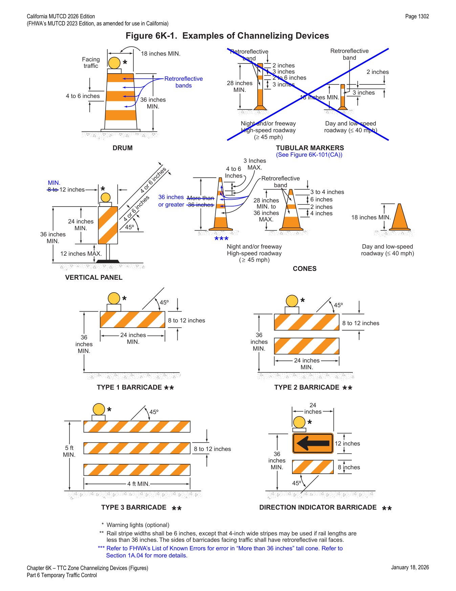

Part 6 · Temporary Traffic Control · Chapter 6K
TTC Zone Channelizing Devices
Design, sizing, retroreflectivity, and spacing requirements for every channelizing device family used in TTC zones — cones, tubular markers, channelizers (CA), portable delineators, vertical panels, drums, Type 1/2/3 barricades, direction indicator barricades, temporary traffic barriers used as channelization, longitudinal channelizing devices, and temporary lane separators — plus pedestrian channelizing devices and detectable edging.
6K.01Channelizing Devices — General
- 01Designs of various channelizing devices shall be as shown in Figure 6K-1 and 6K-101(CA). All channelizing devices shall be crashworthy (see definition in Section 1C.02).
- 02The function of channelizing devices is to warn road users of conditions created by work activities in or near the roadway and to guide road users. Channelizing devices include cones, tubular markers, channelizers (CA), portable delineators, vertical panels, drums, barricades, and longitudinal channelizing devices.
- 03Channelizing devices provide for smooth and gradual vehicular traffic flow from one lane to another, onto a bypass or detour, or into a narrower traveled way. They are also used to channelize traffic away from the work space, pavement drop-offs, pedestrian or shared-use paths, bicycle facilities, or opposing directions of vehicular traffic.
- 04The spacing between cones, tubular markers, vertical panels, drums, and barricades should not exceed a distance in feet equal to 1 times the speed limit in mph when used for taper channelization, and should not exceed a distance in feet equal to 2 times the speed limit in mph when used for tangent channelization.
- 05When channelizing devices have the potential of leading vehicular traffic out of the intended vehicular traffic space as shown in Figure 6P-39, the channelizing devices should be extended a distance in feet of 2 times the speed limit in mph beyond the downstream end of the transition area.
- 05aThe spacing of channelizing devices should not exceed the maximum distances shown in Table 6K-101(CA).
- 06A gap not exceeding 2 inches between the bottom rail and the ground surface may be used to facilitate drainage.
- 07Warning lights (see Section 6L.07) may be added to channelizing devices in areas with frequent fog, snow, or severe roadway curvature, or where visual distractions are present.
- 08A series of sequential flashing warning lights may be placed on channelizing devices that form a merging taper in order to increase driver detection and recognition of the merging taper.
- 09The flashing rates and patterns for warning lights used on channelizing devices are specified in Section 6L.07.
- 10The retroreflective material used on channelizing devices shall display a similar color day or night.
- 11Except as provided in Paragraph 12 of this Section, information identifying the owner or manufacturer of the channelizing device shall not be displayed on any portion of the device that can be seen by road users approaching the device.
- 12The name and telephone number of the highway agency, contractor, or supplier may be displayed on the non-retroreflective surface of all types of channelizing devices.
- 13The area containing the name and telephone number shall be non-retroreflective and not over 2 inches in height.
- 14Particular attention should be given to maintaining the channelizing devices to keep them clean, visible, and properly positioned at all times.
- 15Channelizing devices that are no longer serviceable (see definition in Section 1C.02) shall be replaced.
In practice, the spacing rule of thumb is "1x for tapers, 2x for tangents" (in feet, using the mph speed limit as the multiplier) — engineers use Table 6K-101(CA) below for the exact maximum spacing by posted speed rather than recomputing the multiplier each time.
6K.02Pedestrian Channelizing Devices
- 01Pedestrian channelizing devices indicate a suitable path of pedestrian travel around or through the work zone.
- 02Pedestrian channelizing devices should be provided when work activities impact sidewalks or other pedestrian facilities or when the design of the temporary pedestrian facility does not otherwise include accessibility features consistent with the features in the existing pedestrian facility.
- 03The pedestrian channelizing devices should be used both to close sidewalks and to delineate an alternate route.
- 04An example of a pedestrian channelizing device is depicted in Figure 6K-2.
- 05Pedestrian channelizing devices shall be crashworthy (see definition in Section 1C.02) when exposed to vehicular traffic.
- 06Devices used to channelize pedestrians shall be detectable to users of long canes and visible to pedestrians with vision disabilities.
- 07When used as a sidewalk closure, the device shall cover the entire width of the sidewalk.
- 08Pedestrian channelizing devices shall have continuous detection plates and hand-trailing edges. The bottom of the detection plate shall be no higher than 2 inches above the walkway. The top edge of the detection plate shall be at least 8 inches above the walkway. The top of the hand-trailing edge shall be no lower than 32 inches and no higher than 38 inches above the walkway. The top surface of the hand-trailing edge shall be smooth to optimize hand trailing. Both the detection plate and the hand-trailing edge shall share a common vertical plane.
- 09When pedestrian channelizing devices are combined in a series, the gap between devices should not exceed 1 inch.
- 10The hand-trailing edge is the upper rail on a pedestrian channelizing device, as shown in Figure 6K-2. It is provided to allow pedestrians with vision disabilities to follow the pedestrian channelizing device with their hand. The hand-trailing edge is not a weight-bearing railing.
- 11There should be at least a 2-inch gap between the hand-trailing edge and its support.
- 12When visible to vehicular traffic, the detection plate and the hand-trailing edge of the pedestrian channelizing device shall have retroreflective sheeting complying with Paragraph 10 of Section 6K.01.
- 13When not visible to vehicular traffic, the pedestrian channelizing device should have a contrasting pattern in alternating light and dark colors to provide visual contrast on the upper surface consisting of a minimum of 6 inches of sheeting or other contrasting materials.
- 14Non-retroreflective materials may be used on the pedestrian side of the pedestrian channelizing device.
- 15The sheeting on the pedestrian side of the pedestrian channelizing device may have stripes that are oriented either vertically or at a 45-degree angle.
- 16The contrast of the light and dark stripes on the barricade sheeting assists pedestrians with vision disabilities in following the designated detour.
- 17Section 6M.04 also contains information regarding detectable edging for pedestrian channelization.
- 18A continuous wall may be used as a pedestrian channelizing device.
- 19When used, a continuous wall should have a lower edge no more than 2 inches above the walkway, should extend a minimum of 32 inches above the walkway, should have a common vertical face, and should have alternating, contrasting sheeting positioned 32 inches above the walkway.
- 20The continuous wall may extend to any height above the 32-inch minimum.

In practice, the detectable edging dimensions in this section (detection plate 2 inches max above walkway, 8 inches min top edge; hand-trailing edge 32-38 inches above walkway) are the numbers ADA compliance reviewers check first on any sidewalk closure.
6K.03Cones
- 01Cones (see Figure 6K-1) shall be predominantly orange and shall be made of a material that can be struck without causing damage to the impacting vehicle. For daytime and low-speed roadways, cones shall be not less than 18 inches in height. When cones are used on freeways and other high-speed highways or at night on all highways, or when more conspicuous guidance is needed, cones shall be a minimum of 28 inches in height.
- 02For nighttime use, cones shall be retroreflectorized or equipped with lighting devices for maximum visibility. Retroreflectorization of cones that are 28 to 36 inches in height shall be provided by a 6-inch wide white band located 3 to 4 inches from the top of the cone and an additional 4-inch wide white band located approximately 2 inches below the 6-inch band.
- 02aFor cones that are 28 to 36 inches in height, an additional 4-inch orange retroreflective band may be added approximately 2 inches below the 4-inch white retroreflective band.
- 03Retroreflectorization of cones that are more than 36 inches in height shall be provided by horizontal, circumferential, alternating orange and white retroreflective stripes that are 4 to 6 inches wide. Each cone shall have a minimum of two orange and two white stripes with the top stripe being orange. Any non-retroreflective spaces between the retroreflective stripes shall not exceed 3 inches in width.
- 03aAdditional white colored retroreflectorization may be added to the top and/or bottom sides of the base of cones (not part of the conical shape) to enhance visibility.
- 03bThe 36-inch and 42-inch high cones provide additional conspicuity in visually complex environments and for older road users.
- 04Traffic cones may be used to channelize road users, divide opposing vehicular traffic lanes, divide lanes when two or more lanes are kept open in the same direction, and delineate short-duration maintenance and utility work.
- 05Steps should be taken to minimize the possibility of cones being blown over or displaced by wind or moving vehicular traffic.
- 06Cones may be doubled up to increase their weight.
- 07Some cones are constructed with bases that can be filled with ballast. Others have specially weighted bases, or weight such as sandbag rings, that can be dropped over the cones and onto the base to provide added stability.
- 08Ballast should be kept to the minimum amount needed.
- 09On State highways, the retroreflectorized bands shall be visible at 1000 feet at night under illumination of legal high beam headlights, by persons with vision of or corrected to 20/20.
- 10On local roads, the retroreflectorized bands should be visible at 1000 feet at night under illumination of legal high beam headlights, by persons with vision of or corrected to 20/20.
- 11Refer to Caltrans' Standard Specifications Section 12-3.01B for visibility criteria cited. See Section 1A.05 for information regarding this publication.
6K.04Tubular Markers
- 00aTubular markers are used to guide and channelize traffic for temporary traffic control. Tubular markers generally have the same circular cross-section throughout their length. Tubular markers may be affixed to the ground or may be portable. There are three types of tubular markers, defined as follows:
- 00bThe term "tubular marker" is used for a tubular marker that is affixed to the pavement and is cylindrical from top to bottom.
- 00cThe term "channelizer (CA)" is a special type of tubular marker that is affixed to the pavement and has a cylindrical lower portion and a flattened upper portion. This term "channelizer (CA)" is not to be confused with the term "channelizing device(s)" in Section 6K.01. Although it is similar to the channelizer for permanent use, as discussed in Section 3I.01 and shown in Figure 3I-101(CA), there are differences. The channelizer (CA) is used for temporary traffic control.
- 00dThe term "portable delineator" is used to describe a tubular marker that is not affixed to the pavement but stabilized by using a weighted base or weights, and is cylindrical from top to bottom. This term "portable delineator" is not to be confused with the term "delineator" in Section 6J.04.
- 00eThe retroreflectorized bands for tubular markers, channelizers (CA), and portable delineators shall be visible at 1000 feet during night under illumination of legal high beam headlights, by persons with vision of or corrected to 20/20.
- 00fRefer to Caltrans' Standard Specifications Section 12-3.01B for visibility criteria cited. See Section 1A.05 for information regarding this publication.
Tubular Marker
- 01Tubular markers (see Figure 6K-1) shall be predominantly orange for TTC zone applications and shall be not less than 18 inches high and 2 inches wide facing road users. They shall be made of a material that can be struck without causing damage to the impacting vehicle.
- 02Tubular markers shall be a minimum of 28 inches in height when they are used on freeways and other high-speed highways, on all highways during nighttime, or whenever more conspicuous guidance is needed.
- 03For nighttime use, tubular markers shall be retroreflectorized. Retroreflectorization of tubular markers that have a height of less than 42 inches shall be provided by two 3-inch wide white bands placed a maximum of 2 inches from the top with a maximum of 6 inches between the bands. Retroreflectorization of tubular markers that have a height of 42 inches or more shall be provided by four 4-inch to 6-inch wide alternating orange and white stripes with the top stripe being orange.
- 03aThe 42-inch high tubular markers provide additional conspicuity in visually complex environments and for older road users.
- 04Tubular markers have less visible area than other devices and should be used only where space restrictions do not allow for the use of other more visible devices.
- 05Tubular markers should be stabilized by affixing them to the pavement, by using weighted bases, or by using weights such as sandbag rings that can be dropped over the tubular markers and onto the base to provide added stability. Ballast should be kept to the minimum amount needed.
- 06Tubular markers may be used effectively to divide opposing lanes of road users, divide vehicular traffic lanes when two or more lanes of moving vehicular traffic are kept open in the same direction, and to delineate the edge of a pavement drop off where space limitations do not allow the use of larger devices.
- 07A tubular marker shall be attached to the pavement to display the minimum 2-inch width to the approaching road users.
Portable Delineator
- 08The design of a portable delineator shall be as shown in Figure 6K-101(CA).
- 09Portable delineators shall be a minimum of 36 inches in height. The vertical portion of portable delineators shall be fluorescent orange or predominantly orange. The posts shall be not less than 3 inches in width or diameter. Retroreflectorization of portable delineators that have a height of less than 42 inches shall be provided by two 3-inch wide white bands placed a maximum of 2 inches from the top with a maximum of 6 inches between the bands. Retroreflectorization of portable delineators that have a height of 42 inches or more shall be provided by four 4-inch to 6-inch wide alternating orange and white stripes with the top stripe being orange.
- 10Additional white colored retroreflectorization may be added to the top and/or bottom sides of the portable delineator base to enhance visibility.
- 11The 42-inch or higher portable delineators provide additional conspicuity in visually complex environments and for older road users.
- 12Portable delineators have less visible area than other devices and should be used only where space restrictions do not allow for the use of other more visible devices.
- 13Portable delineators should be stabilized by using weighted bases, or weights such as sandbag rings that can be dropped over the portable delineators and onto the base to provide added stability. Ballast should be kept to the minimum amount needed.
- 14Portable delineators may be used effectively to divide opposing lanes of road users, divide vehicular traffic lanes when two or more lanes of moving vehicular traffic are kept open in the same direction, and to delineate the edge of a pavement drop off where space limitations do not allow the use of larger devices.
Channelizer (CA)
- 15When a channelizer (CA) is used, it shall be attached to the pavement in a manner such that the retroreflectorized bands facing road users meet the minimum visibility requirements.
- 16The design of a channelizer (CA) shall be as shown in Figure 6K-101(CA). The height shall be 36 inch minimum where speeds are above 40 mph. The height shall be 28 inch minimum where speeds are 40 mph or less. The width of the post shall be 2 ¼ inch minimum and the color predominantly orange. Channelizers (CA) shall be affixed with retroreflective white sheeting, 3 by 12 inches in size.
- 17Channelizers (CA) are implanted in the ground or affixed to the pavement, and are not susceptible to displacement, and are capable of normally withstanding numerous vehicular impacts.
- 18Channelizers (CA) are generally used in series to create a visual fence/barrier, to provide additional guidance and/or restriction to traffic.
- 19Channelizers (CA) may be used in lieu of cones, portable delineators, or drums, to channelize traffic or divide opposing lanes of traffic.

In practice, the distinction between the three tubular-marker-family devices is entirely about the base: affixed-and-cylindrical = tubular marker, affixed-with-flattened-top = channelizer (CA), and weighted-not-affixed = portable delineator. All three share the same retroreflective banding scheme (two 3-inch white bands under 42 inches; four 4-6 inch alternating orange/white stripes at 42 inches or taller).
6K.05Vertical Panels
- 01Vertical panels (see Figure 6K-1) shall have retroreflective striped material that is 8 to 12 inches in width and at least 24 inches in height. They shall have alternating diagonal orange and white retroreflective stripes sloping downward at an angle of 45 degrees in the direction vehicular traffic is to pass.
- 02Where the height of the retroreflective material on the vertical panel is 36 inches or more, a stripe width of 6 inches shall be used.
- 02aVertical panels should be a minimum of 12 inch in width.
- 03Where the height of the retroreflective material on the vertical panel is less than 36 inches, a stripe width of 4 inches may be used.
- 04Where space is limited, vertical panels may be used to channelize vehicular traffic, divide opposing lanes, or replace barricades.
6K.06Drums
- 01Drums (see Figure 6K-1) used for road user warning or channelization shall be constructed of lightweight, deformable materials. They shall be a minimum of 36 inches in height and have at least an 18-inch minimum width regardless of orientation. Metal drums shall not be used. The markings on drums shall be horizontal, circumferential, alternating orange and white retroreflective stripes 4 to 6 inches wide. Each drum shall have a minimum of two orange and two white stripes with the top stripe being orange. Any non-retroreflectorized spaces between the horizontal orange and white stripes shall not exceed 3 inches wide. Drums shall have closed tops that will not allow collection of construction debris or other debris.
- 02Drums are highly visible, have good target value, give the appearance of being formidable obstacles and, therefore, command the respect of road users. They are portable enough to be shifted from place to place within a TTC zone in order to accommodate changing conditions, but are generally used in situations where they will remain in place for a prolonged period of time.
- 03Although drums are most commonly used to channelize or delineate road user flow, they may also be used alone or in groups to mark specific locations.
- 04Drums should not be weighted with sand, water, or any material to the extent that would make them hazardous to road users or workers when struck. Drums used in regions susceptible to freezing should have drain holes in the bottom so that water will not accumulate and freeze causing a hazard if struck by a road user.
- 05Ballast shall not be placed on the top of a drum.
- 06On State highways, the retroreflectorized bands shall be maintained at or above minimum levels in Table 2A-5.
- 07On local roads, the retroreflectorized bands should be maintained at or above minimum levels in Table 2A-5.
- 08Refer to Caltrans' Standard Specifications Section 12-3.01B for visibility criteria cited. Refer to Section 1A.05 for information regarding this publication.
6K.07Type 1, 2, or 3 Barricades
- 01A barricade is a portable or fixed device having from one to three rails with appropriate markings and is used to control road users by closing, restricting, or delineating all or a portion of the right-of-way.
- 02As shown in Figure 6K-1, barricades are classified as Type 1, Type 2, or Type 3.
- 03Stripes on barricade rails shall be alternating orange and white retroreflective stripes sloping downward at an angle of 45 degrees in the direction road users are to pass. Except as provided in Paragraph 4 of this Section, the stripes shall be 6 inches wide.
- 04When rail lengths are less than 36 inches, 4-inch wide stripes may be used.
- 05The minimum length for Type 1 and Type 2 Barricades shall be 24 inches, and the minimum length for Type 3 Barricades shall be 48 inches. Each barricade rail shall be 8 to 12 inches wide. Barricades used on freeways, expressways, and other high-speed roadways shall have a minimum of 270 square inches of retroreflective area facing road users.
- 05aThe Type I and Type II Barricades, 36 inches in length with each rail 12-inch wide, provide additional conspicuity in visually complex environments and for older road users.
- 05bOn State highways, the retroreflectorized bands shall be maintained at or above minimum levels in Table 2A-5.
- 05cOn local roads, the retroreflectorized bands should be maintained at or above minimum levels in Table 2A-5.
- 05dRefer to Caltrans' Standard Specifications Section 12-3.01B for visibility criteria cited. See Section 1A.05 for information regarding this publication.
- 06Where barricades extend entirely across a roadway, the stripes should slope downward in the direction toward which road users must turn.
- 07Where both right and left turns are provided, the barricade stripes should slope downward in both directions from the center of the barricade or barricades.
- 08Where no turns are intended, the stripes should be positioned to slope downward toward the center of the barricade or barricades.
- 09Barricade rails should be supported in a manner that will allow them to be seen by the road user, and in a manner that provides a stable support that is not easily blown over or displaced.
- 10The width of the existing pedestrian facility should be provided for the temporary facility if practical. Traffic control devices and other construction materials and features should not intrude into the usable width of the sidewalk, temporary pathway, or other pedestrian facility. When it is not possible to maintain a minimum width of 60 inches throughout the entire length of the pedestrian pathway, a 60 x 60-inch passing space should be provided at least every 200 feet to allow individuals in wheelchairs to pass.
- 11Barricade rail supports should not project into pedestrian circulation routes more than 4 inches from the support between 27 and 80 inches from the surface as described in Section 307 of the U.S. Department of Justice 2010 ADA Standards for Accessible Design, September 15, 2010, 28 CFR 35 and 36, Americans with Disabilities Act of 1990.
- 12For Type 1 Barricades, the support may include other unstriped horizontal rails necessary to provide stability.
- 13On high-speed expressways or in other situations where barricades might be susceptible to overturning in the wind, ballasting should be used.
- 14Sandbags may be placed on the lower parts of the frame or the stays of barricades to provide the required ballast.
- 15Type 1 or Type 2 Barricades are intended for use in situations where road user flow is maintained through the TTC zone.
- 16Barricades may be used alone or in groups to mark a specific condition or they may be used in a series for channelizing road users.
- 17Type 1 Barricades may be used on conventional roads or urban streets.
- 18Type 2 or Type 3 Barricades should be used on freeways and expressways or other high-speed roadways. Type 3 Barricades should be used to close or partially close a road.
- 19Type 3 Barricades used at a road closure may be placed completely across a roadway or from curb to curb.
- 20Where provision is made for access of authorized equipment and vehicles, the responsibility for Type 3 Barricades should be assigned to a person who will provide proper closure at the end of each work day.
- 21When a highway is legally closed but access must still be allowed for local road users, barricades usually are not extended completely across the roadway.
- 22A sign shall be installed with the appropriate legend concerning permissible use by local road users (see Section 6G.05).
- 23Adequate visibility of the barricades from both directions should be provided.
- 24Signs may be installed on barricades (see Section 6F.02).
- 25Barricades may be used as sign supports if the barricades have been successfully crash tested as one unit with a construction area sign attached.
6K.08Direction Indicator Barricades
- 01The Direction Indicator Barricade (see Figure 6K-1) shall consist of a One-Direction Large Arrow (W1-6) sign mounted above a diagonal striped, horizontally-aligned, retroreflective rail.
- 02The One-Direction Large Arrow (W1-6) sign shall have a black legend and border on an orange background. The stripes on the bottom rail shall be alternating orange and white retroreflective stripes sloping downward at an angle of 45 degrees in the direction road users are to pass. The stripes shall be 4 inches wide. The One-Direction Large Arrow (W1-6) sign shall be 24 x 12 inches. The bottom rail shall have a length of 24 inches and a height of 8 inches.
- 03The Direction Indicator Barricade may be used in tapers, transitions, and other areas where specific directional guidance to drivers is necessary.
- 04If used, Direction Indicator Barricades should be used in a series to direct the driver through the transition and into the intended travel lane.

In practice, the Type 1/2/3 barricade choice tracks facility speed: Type 1 for conventional roads/urban streets, Type 2 or 3 for freeways/expressways/other high-speed roadways, and Type 3 specifically whenever a road is being closed or partially closed (minimum 48-inch rail length vs. 24 inches for Types 1/2).
6K.09Temporary Traffic Barriers as Channelizing Devices
- 01Temporary traffic barriers (see Section 6M.02) are not TTC devices in themselves; however, when placed in a position identical to a line of channelizing devices and marked and/or equipped with appropriate channelization features to provide guidance and warning both day and night, they serve as TTC devices.
- 02Temporary traffic barriers serving as TTC devices shall comply with requirements for such devices as set forth throughout Part 6.
- 03Temporary traffic barriers (see Section 6M.02) shall not be used solely to channelize road users, but also to protect the work space. If used to channelize vehicular traffic, the temporary traffic barrier shall be supplemented with delineation, pavement markings, or channelizing devices for improved daytime and nighttime visibility.
- 04Temporary traffic barriers should not be used for a merging taper except in low-speed urban areas.
- 05When it is necessary to use a temporary traffic barrier for a merging taper in low-speed urban areas or for a constricted/restricted TTC zone, the taper length should be designed to optimize road user operations considering the available geometric conditions.
- 06When it is necessary to use a temporary traffic barrier for a merging taper in low-speed urban areas or for a constricted/restricted TTC zone, the taper shall be delineated using channelizing devices, and/or an edge line, and/or delineators on the barrier.
- 07When used for channelization, temporary traffic barriers should be of a light color for increased visibility.
- 08Side reflectors or top mounted reflectors (facing the road user) may be used on temporary traffic barriers.
- 09If used, the spacing of these reflectors should not exceed a distance in feet equal to 1.0 times the speed limit in mph through the TTC zone.
6K.10Longitudinal Channelizing Devices
- 01Longitudinal channelizing devices are lightweight, deformable devices that are highly visible, have good target value, and can be connected together.
- 02If used singly as Type 1, 2, or 3 barricades, longitudinal channelizing devices shall comply with the general size, color, stripe pattern, retroreflectivity, and placement characteristics established for the devices described in this Chapter.
- 03If used to channelize vehicular traffic at night, longitudinal channelizing devices should be supplemented with retroreflective material or delineation for improved nighttime visibility.
- 04Longitudinal channelizing devices may be used instead of a line of cones, drums, or barricades.
- 05Longitudinal channelizing devices may be hollow and filled with water as a ballast.
- 06Longitudinal channelizing devices may be used for pedestrian traffic control.
- 07If used for pedestrian traffic control, longitudinal channelizing devices shall be interlocked to delineate or channelize flow. The interlocking devices shall not have gaps that allow pedestrians to stray from the channelizing path.
- 08Longitudinal channelizing devices have not met the crashworthy requirements for temporary traffic barriers and should not be used to shield obstacles or provide positive protection for pedestrians or workers.
6K.11Temporary Lane Separators
- 01Temporary lane separators may be used to channelize road users, to divide opposing vehicular traffic lanes, and to divide lanes when two or more lanes are open in the same direction.
- 02Temporary lane separators shall consist of a longitudinal base component with a maximum height of 4 inches and a maximum width of 1 foot. The longitudinal base shall have sloping sides in order to facilitate crossover by emergency vehicles. One or more types of channelizing devices, such as tubular markers, vertical panels, or a Narrow Two-Way Traffic (W6-4) sign (see Section 6H.17) mounted on flexible supports, shall be affixed to the longitudinal base.
- 03Channelizing devices affixed to the longitudinal base of a temporary lane separator shall be retroreflectorized to provide nighttime visibility.
- 04A temporary lane separator should be stabilized by affixing it to the pavement in a manner suitable to its design, while allowing the unit to be intentionally moved from place to place within the TTC zone in order to accommodate changing conditions.
- 05Temporary Lane Separators should not be used to shield obstacles or provide positive protection for pedestrians or workers because these devices have not met the crashworthy requirements for temporary traffic barriers.
- 06At pedestrian crossing locations, temporary lane separators shall have an opening or be shortened to provide a pathway that is at least 60 inches wide for crossing pedestrians.
6K.12Other Channelizing Devices
- 01Channelizing devices other than those described in this Chapter may be used in special situations based on an engineering study.
- 02Other channelizing devices should comply with the general size, color, stripe pattern, retroreflection, and placement characteristics established for the devices described in this Chapter.
Table 6K-101(CA)Maximum Spacing of Channelizing Devices
| Speed (mph) | Taper* (feet) | Tangent (feet) | Conflict** (feet) |
|---|---|---|---|
| 20 | 20 | 40 | 10 |
| 25 | 25 | 50 | 12 |
| 30 | 30 | 60 | 15 |
| 35 | 35 | 70 | 17 |
| 40 | 40 | 80 | 20 |
| 45 | 45 | 90 | 22 |
| 50 | 50 | 100 | 25 |
| 55 | 50 | 100 | 25 |
| 60 | 50 | 100 | 25 |
| 65 | 50 | 100 | 25 |
| 70 | 50 | 100 | 25 |
| 75 | 50 | 100 | 25 |
* Maximum channelizing device spacing for all speeds on one-lane/two-way tapers is 20 feet. Maximum channelizing device spacing for all speeds on downstream tapers is 20 feet. All other tapers are as shown. ** Use on intermediate and short-term projects for taper and tangent sections where there are no pavement markings or where there is a conflict between existing pavement markings and channelizing devices.
★ Key Takeaways — Chapter 6K
- All channelizing devices must be crashworthy; spacing follows the 1x-speed-limit rule for tapers and 2x-speed-limit rule for tangents (in feet per mph), refined by Table 6K-101(CA) for exact maximum spacing by posted speed.
- Cones: 18 inches min. (day/low-speed); 28 inches min. (freeway/high-speed/night); over 36 inches requires alternating orange/white circumferential stripes (min. 2 orange + 2 white, top stripe orange).
- Tubular marker family (tubular marker, channelizer (CA), portable delineator) share retroreflective banding rules keyed to height: two 3-inch white bands under 42 inches, four 4-6 inch alternating orange/white stripes at 42+ inches.
- Vertical panels: 8-12 inches wide, 24 inches min. height, 45-degree diagonal orange/white stripes (6-inch stripes required at 36+ inches height).
- Drums: min. 36 inches tall, min. 18 inches wide, lightweight deformable material (no metal), closed tops, no ballast on top.
- Barricades: Type 1/2 min. 24 inches long, Type 3 min. 48 inches long; rails 8-12 inches wide, 6-inch stripes (4-inch allowed under 36-inch rail length); freeway/expressway barricades need min. 270 sq. in. of retroreflective area.
- Pedestrian channelizing devices must be crashworthy, detectable to long canes, with a detection plate (0-2 inches to 8+ inches above walkway) and hand-trailing edge (32-38 inches above walkway) sharing a common vertical plane.
- Temporary lane separators: max. 4-inch height, max. 1-foot width base with sloping sides for emergency-vehicle crossover; pedestrian crossings require a 60-inch-wide opening.